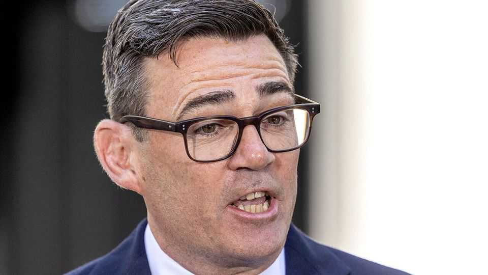

Andy Burnham and the politics of accents
His way of speaking marks him out in a long line of posh-sounding PMs

Aug 13th 2026
WATCH A VIDEO of Andy Burnham’s remarks after being appointed prime minister, turn the automatic transcript on, and you might be in for a surprise: “I have just returned from Bookingham Palace,” reads one. It is a seminal moment: none of his predecessors in the age of recording has pronounced “Buckingham” in a way a transcriber would render as “Bookingham”. He is also the first to rhyme words like “class” with “gas”. In short, he sounds like a northerner, much more so than anyone who has taken office at Number 10 Downing Street, says Geoff Lindsey of University College London.
Millions of Britons talk like Mr Burnham. Raised near Liverpool, later moving to Manchester, he is often seen as a pleaser, but it is impossible to please everyone, especially in two rival cities. In 2016 he told Rob Drummond, a linguist at Manchester Metropolitan University, that he was accused of playing up Scouse sounds in Liverpool and Manc vowels in Manchester. He calls his own accent “generic northern”.
Not every prime minister has spoken with perfect Received Pronunciation (RP), even setting aside the Scottish and Welsh ones. Jim Callaghan's “r”s in words like “worst” and “work” were a giveaway: he came from Portsmouth, near the south-western part of England where “r”s are sometimes pronounced after vowels. Harold Wilson’s Yorkshire roots were also reflected in his accent, though he was less easy to instantly peg as a northerner than Mr Burnham. Two more recent prime ministers, Sir Tony Blair and Liz Truss, grew up in the north but didn’t sound like it.
Things were different in the 19th century. Robert Peel, prime minister in the 1830s and 1840s, was known for a Lancashire accent. William Gladstone, born in Liverpool to Scottish parents, was said to have a north-western accent, too—though it is hardly apparent in the formal greeting to Thomas Edison in the first recording of a British prime minister. But by the mid-20th century, a cut-glass RP held sway from Oxbridge to the BBC and Westminster.
That mid-century accent now sounds almost comical, disappearing swiftly as the 1960s made working-class and regional accents cooler in the wider culture. But things changed more slowly in politics. Labour in particular began to flaunt its MPs with working-class, regional accents. But none of them made it to Number 10.
Room continues to open up slowly for a Westminster that sounds like the country. Jo Platt, an MP for Leigh and Atherton near Manchester, grew up in Salford. As a marketing trainee in the 1980s, she changed her accent to avoid the mockery she saw visited on others; when she would call friends after leaving work they would say “Why are you speaking like that?” She has since embraced her old accent, and kicked off a recent parliamentary debate on the topic. (A Northern Irish MP shared tales of Hansard staff chasing him to ask what he had said for the official record.)
Dr Drummond and Amanda Cole of Cambridge have begun a research project to find out more about accents in Westminster. Dr Cole hails from Essex, and her research—using her own voice—has found that people rate an Essex-accented speaker as 11% less intelligent than RP speakers. “I don’t think we’re at a point in this country yet where we could have a prime minister with an Essex accent,” she says.■